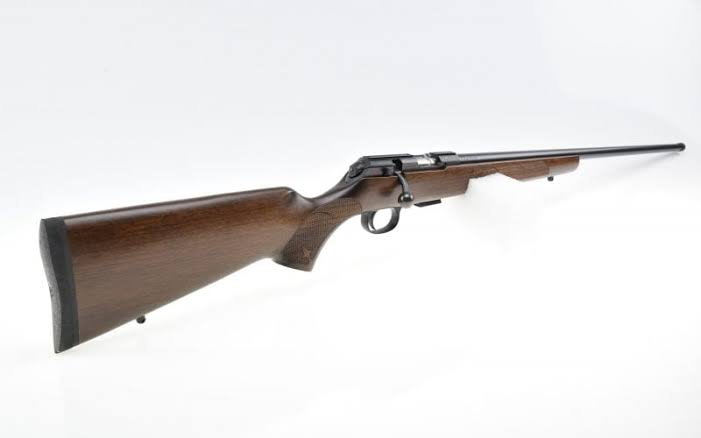
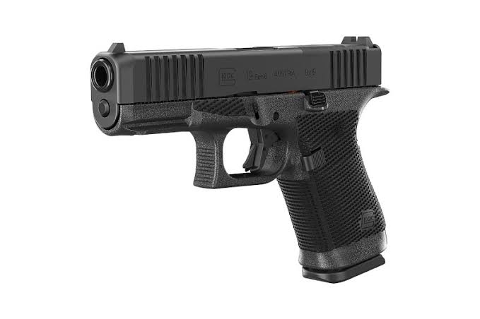
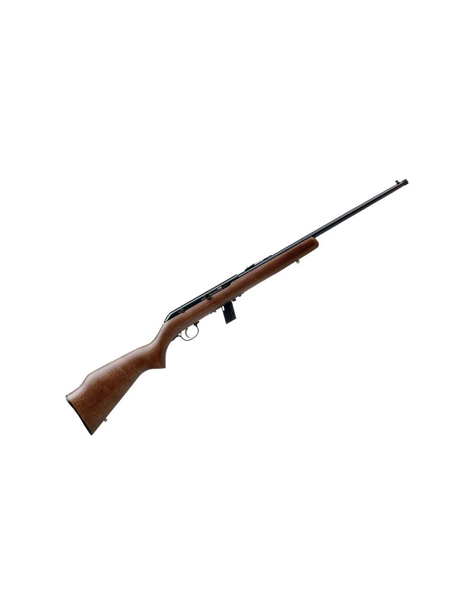

Voor sportschutters zijn er verschillende gereglementeerde onderdelen. Denk aan klein kaliber en andere disciplines die passen binnen de regels van de schietsportvereniging en de landelijke sportbonden.




Deze onderdelen zijn bedoeld voor leden die op een verantwoorde manier willen trainen, met duidelijke regels, toezicht en begeleiding. Of een specifieke discipline mogelijk is, hangt af van regelgeving, ervaring, materiaal en beschikbaarheid binnen de vereniging.
Wil je weten of deze discipline bij jou past? Kom kennismaken of stel je vraag via de contactpagina. De vereniging denkt graag mee over een passende eerste stap.
Er wordt gewerkt volgens baanregels, toezicht en de geldende procedures voor sportschutters.
Nieuwe of aspirant-leden krijgen uitleg over wat wel en niet mogelijk is binnen de vereniging.
Veiligheid, discipline en respect voor de regels staan bij elk onderdeel voorop.
Bij de schietsport gelden regels voor leeftijd, begeleiding, legitimatie en toelating. Neem vooraf contact op zodat de vereniging kan uitleggen wat voor jouw situatie mogelijk is.